Fukuyama, Hiroshima: things to do, food and stays
Fukuyama · Hiroshima
Fukuyama
Highlighted on the Hiroshima map.

Stay
汀邸 遠音近音
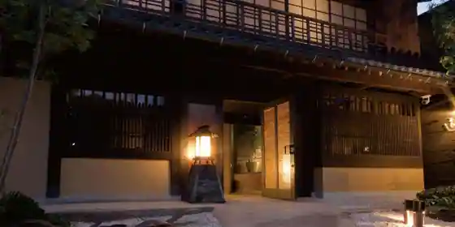
Migiwa Tei Tone Kin Oto
Inn at Shinonakanitatazumu Onsen in Tomo, Fukuyama.
ダイワロイネットホテル福山駅前
Daiwaroinetto Hotel Fukuyamaeki Mae
Hotel in Sanyukimaru, Fukuyama with separate bath and toilet.
リッチモンドホテル福山駅前
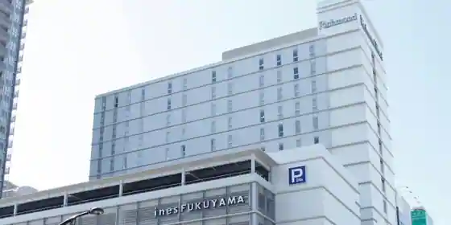
Ritchimondo Hotel Fukuyamaeki Mae
Hotel in Higashisakura, Fukuyama with breakfast available.
ベッセルホテル福山
Besseru Hotel Fukuyama
Hotel in Minamimotosho, Fukuyama with parking.
ホテル鴎風亭
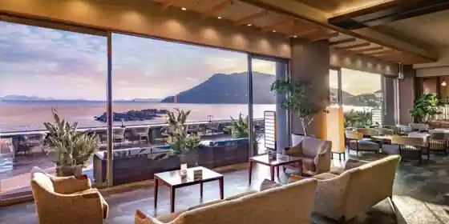
Hotel Kamome Kaze Tei
Hotel in Tomo, Fukuyama with open-air baths and scenic views.
カンデオホテルズ福山（CANDEO HOTELS）
Kandeo Hotels Fukuyama (CANDEO HOTELS)
Hotel in Mifune, Fukuyama with open-air baths and breakfast available.
景勝館漣亭
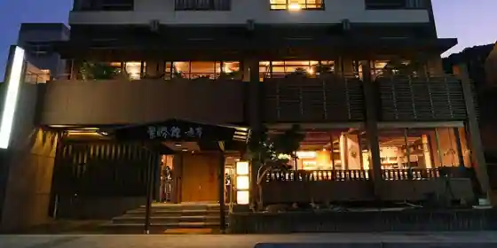
Keisho Kan Sazanami Tei
Inn at Tomonora Onsen in Tomo, Fukuyama.
福山ニューキャッスルホテル
Fukuyama Nyukyassuru Hotel
Hotel in Sanyukimaru, Fukuyama with business travelers; 1-minute walk from Jrfukuyama Station.
鞆の浦 潮待ちホテル
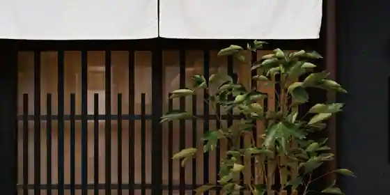
Tomonora Shiomachi Chi Hotel
福山オリエンタルホテル
Fukuyama Orientaru Hotel
Hotel in Shiromi, Fukuyama with buffet meals and breakfast available.
ベッセルイン福山駅北口
Besseruin Fukuyamaeki Kitaguchi
せとうち母家
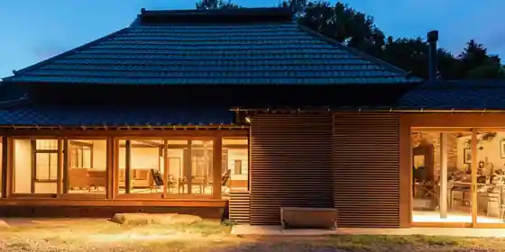
Setochi Omoya
Inn in Kumano, Fukuyama with one group per day and a renovated traditional house.
Dining
豚笑
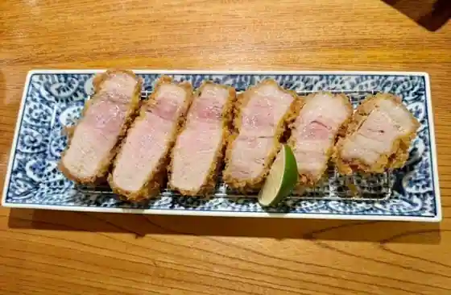
Buta Warai
サラザン
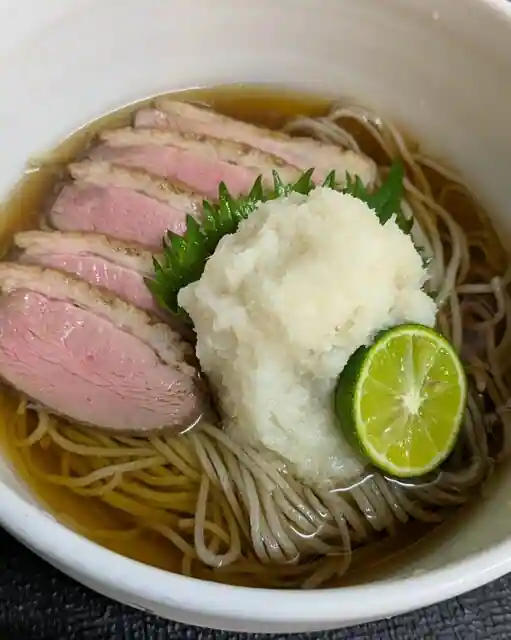
Sarazan
平の家
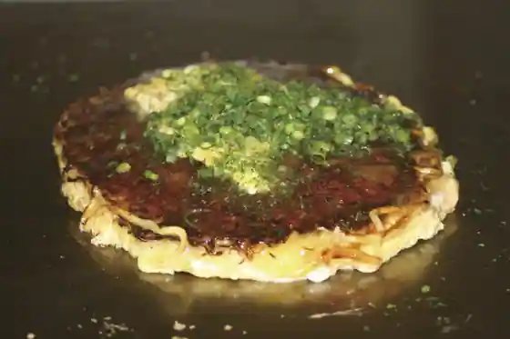
Taira No Ie
うなぎ なか勝
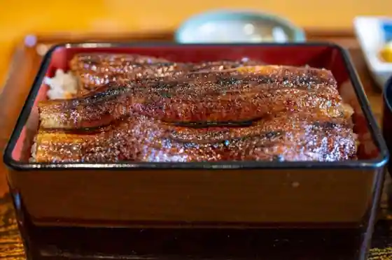
Unagi Naka Kachi
おばんざい木むら
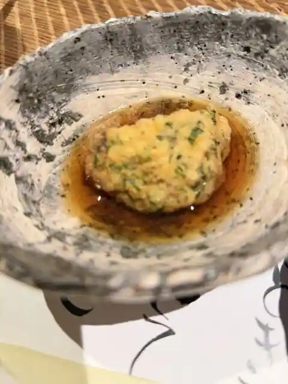
Obanzai Ki Mura
とり常
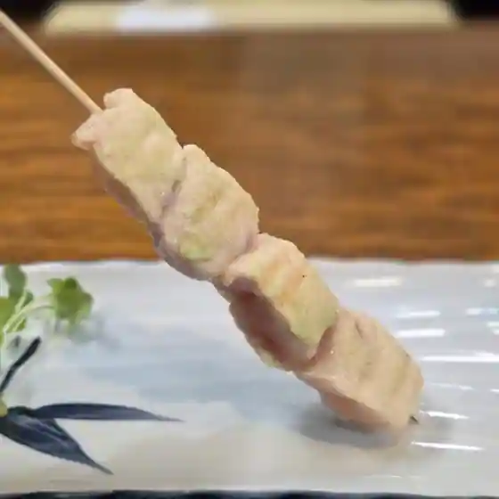
Tori Tsune
ル・ミロワール
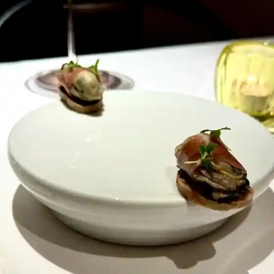
Ru Mirowaru
ステーキ懐石都 春日
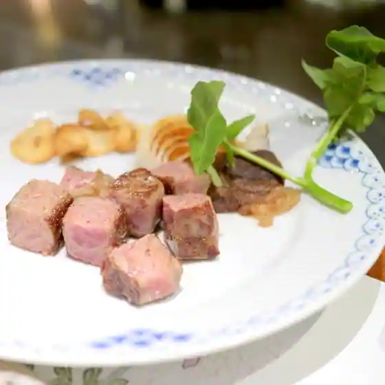
Steak Kaiseki Miyako Kasuga
尾道ラーメン 一丁
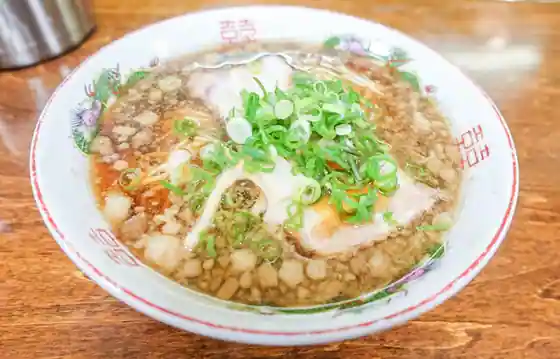
Onomichi Ramen Itcho
organo
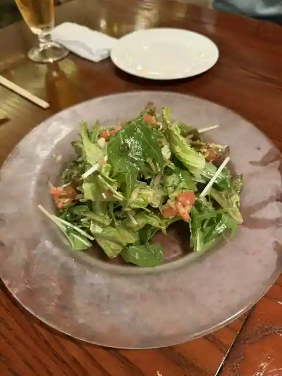
organo
福城苑
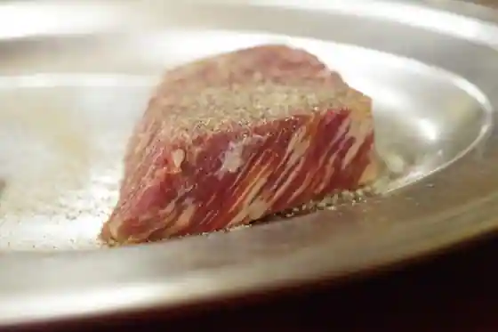
Fuku Shiro En
酒奏居肴家 季酒
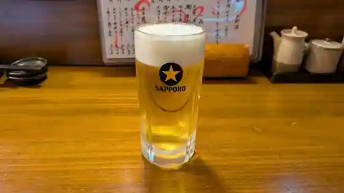
Sake So Kyo Sakana Ie Ki Sake
おく村
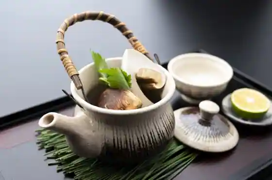
Oku Mura
中華そば そのだ
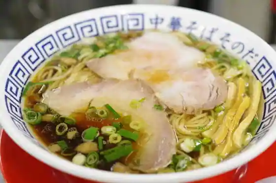
Chuka Soba Sonoda
てっせん
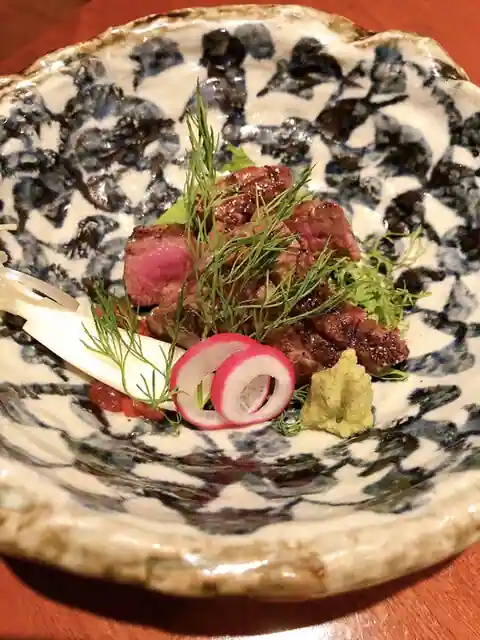
Tessen
和彩酒膳植おか
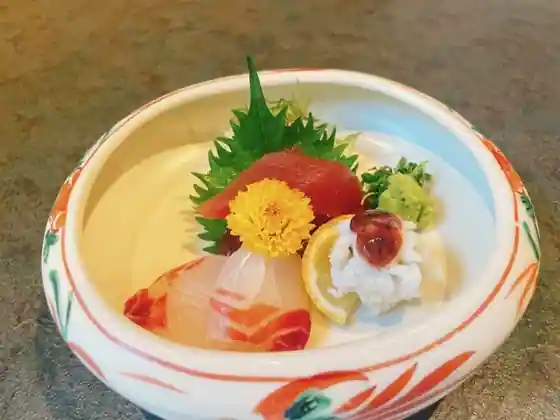
Wasai Shuzen Shoku Oka
ベトナム料理 アオババ 福山店
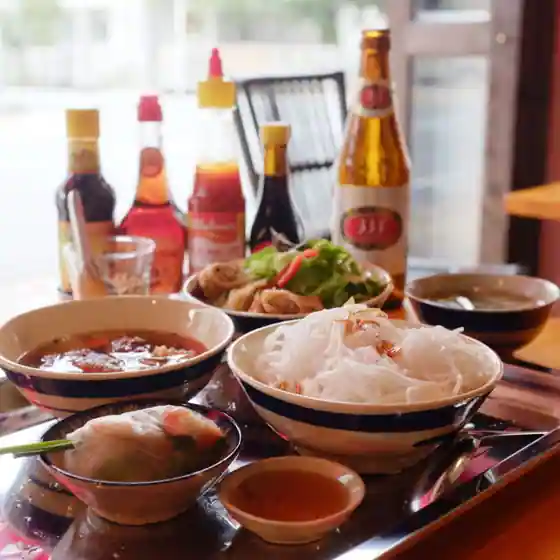
Betonamu Ryori Aobaba Fukuyama
蓮華
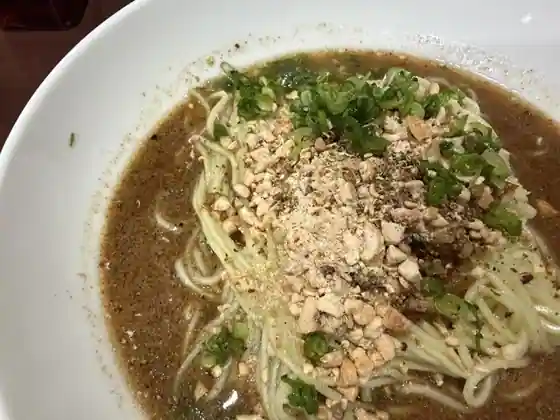
Renge
純喫茶 ルナ 元町店
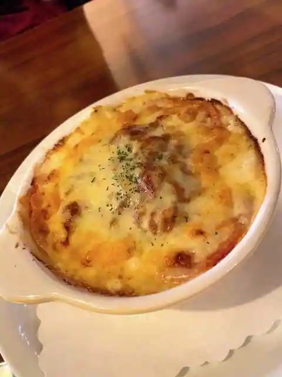
Jun Kissa Runa Motomachi
ヴェルデュ都
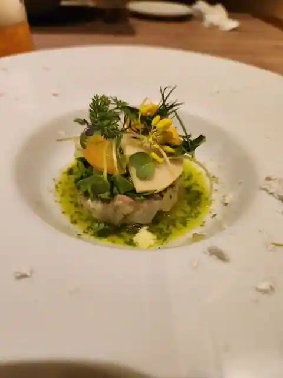
Verudeyu Miyako
板前割烹 なかくし
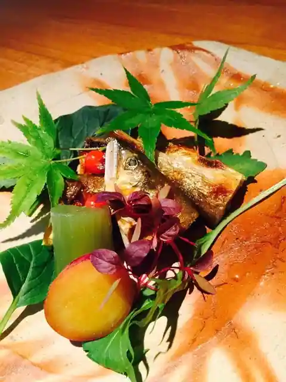
Itamae Kappo Nakakushi
いざかや 別館
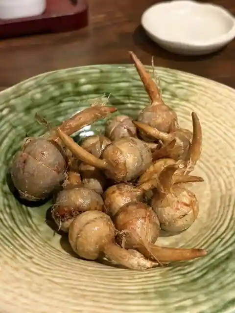
Izakaya Bekkan
都あけぼの
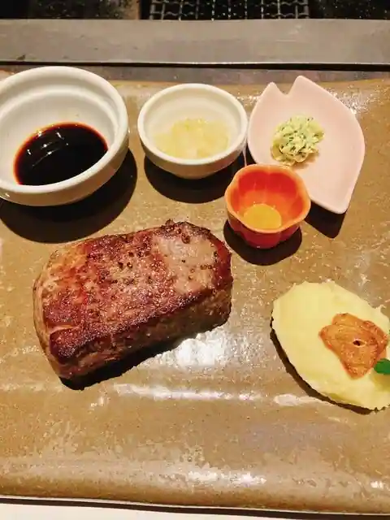
Miyako Akebono
つたふじ 福山店
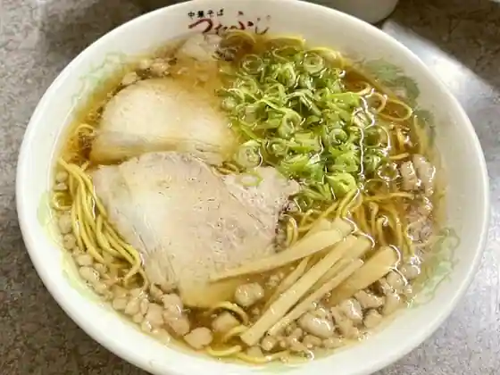
Tsutafuji Fukuyama
Sights
Fukuyama Shiro

Tomo no Ura

Myo In

Bara Park

Fukuyama Eki